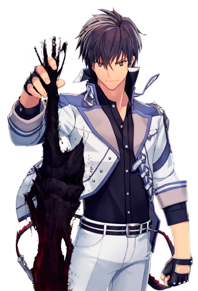

Anos Voldigoard: O Rei Demônio Renascido
Anos Voldigoard é muito mais do que apenas um poderoso demônio. Ele representa a ressurgência do temível Rei Demônio em uma era de incertezas e desafios. Com sua habilidade única de manipular a magia e sua determinação inabalável, ele se torna uma figura lendária na série "The Misfit of Demon King Academy".
Ascensão de Arnos Voldigoard
A jornada de Arnos Voldigoard é uma história de ressurreição e redenção. Renascido após 2000 anos de ausência, ele enfrenta um mundo que mudou drasticamente desde sua última existência. No entanto, sua determinação em restaurar sua posição como o verdadeiro Rei Demônio e trazer paz ao reino não vacila. Conhecido por sua incrível força mágica e sua personalidade desafiadora, Arnos inspira tanto temor quanto admiração em seus aliados e inimigos. Seu legado é uma saga de coragem, poder e esperança em meio à escuridão. O Legado de Poder e Sabedoria
Além de sua imensa força mágica, o legado de Arnos Voldigoard abrange também uma profunda sabedoria acumulada ao longo de séculos. Sua jornada não apenas desafia as fronteiras do poder, mas também ilumina os caminhos da verdade e da justiça. Como um guia para aqueles que o seguem, Arnos representa não apenas a supremacia do poder, mas também a nobreza do conhecimento e a grandiosidade da alma. Seu legado transcende as eras, inspirando aqueles que buscam não apenas dominar o mundo, mas também compreender seu verdadeiro propósito. O Legado de Poder e Sabedoria
O Legado de Poder e Sabedoria
Além de sua imensa força mágica, o legado de Arnos Voldigoard abrange também uma profunda sabedoria acumulada ao longo de séculos. Sua jornada não apenas desafia as fronteiras do poder, mas também ilumina os caminhos da verdade e da justiça. Como um guia para aqueles que o seguem, Arnos representa não apenas a supremacia do poder, mas também a nobreza do conhecimento e a grandiosidade da alma. Seu legado transcende as eras, inspirando aqueles que buscam não apenas dominar o mundo, mas também compreender seu verdadeiro propósito.
Prepare-se para uma jornada além das sombras, onde cada descoberta revela uma nova camada de mistério e maravilha. O mundo de "The Misfit of Demon King Academy" aguarda, pronto para ser explorado e desvendado.